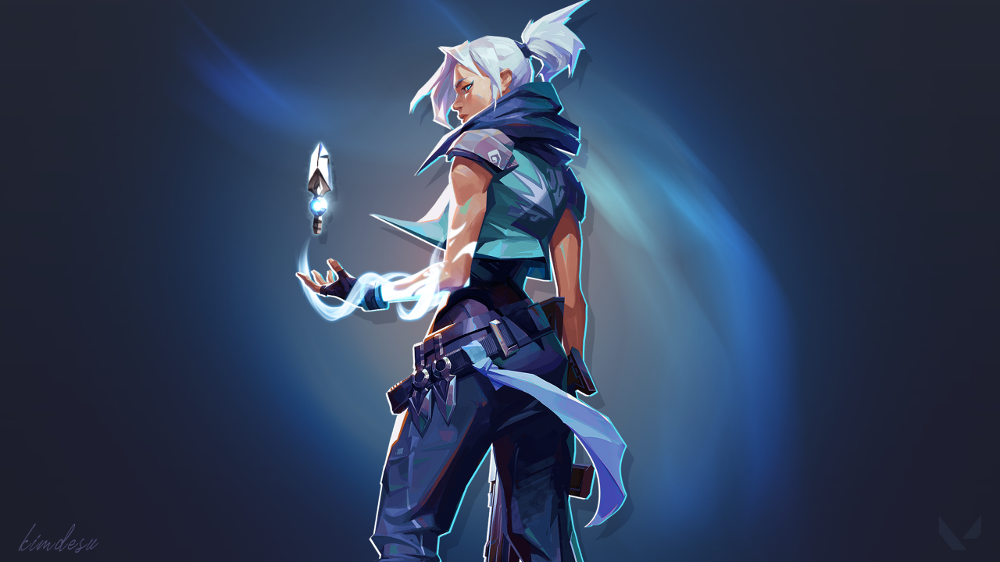

Ability 1-Tailwind:This ability is a dash which is like a teleport except u are doing it without teleporting,it gets replenished after every 2 kills and u can dash to all directions using the W,A,S,D keys.It's very useful to get out of difficult situations.
Ability 2-Cloudburst:This ability has 3 charges.It's a temporary smoke which lasts for around 7 or 8 seconds.You can create cover for urself and ur teammates as well.
Ability 3-Updraft:This ability has 2 charges.It throws u into the air for a short period of time.U can reach certain locations in the map that only a few characters can reach.
Passive-drift:this ability is exclusive to jett.with this,when u are in the air u can press space to glide in the air to prevent fall damage from high vantage points.
Ultimate:This ability gives u 5 knives which can be shot together or seperately.The knives get replenished after every kill depending on the number of knives used.U can use this knives in the air as its accuracy does not get affected.u cap pair the ultimate well with the tailwind and updraft.